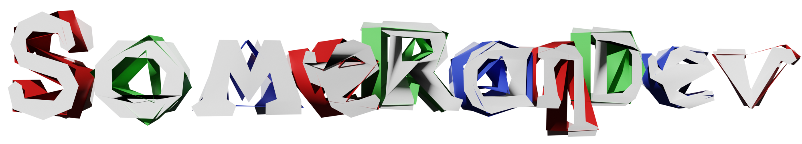

Terms of Use for plugins:
- These plugins may be used in both free and commercial games.
Maybee Rezbit (SomeRanDev) or Maybee "SomeRanDev" Rezbit must be given credit and this website must also be linked.- You are allowed to edit and reuse the code directly as long as it’s for your own project, extension plugins, or built-in compatibility patches.
- You are free to package, encrypt, compile, etc. as long as it’s being done to the project or code-base as a whole. However, while in their normal JavaScript form, please refrain from changing the filename and comment headers of the plugins.
- Please do not redistribute the plugins outside of game releases.
- Please refrain from taking code unless it’s for project that requires the plugin in question.
- If you wish to redistribute edits, please create an extension plugin. If a certain aspect of a Plugin cannot be modified without changing the original, contact me and I will fix the issue and/or give permission to redistribute the original.
- If I see your game uses one of my Plugins and I shamelessly ask for a free copy, please do not judge me too much 😀 (Though, honestly, if it’s actually a really good game, I’d probably just purchase it myself to support the good cause.)
- You are free to port plugins from previous versions of RPG Maker to the one you are using as long as it’s exclusively for your own projects, projects of the client, etc…
Important Notes:
The Terms of Use are subject to change at any time. Games and projects are expected to follow the Terms of Use that were listed at the time of the game/project’s current version’s release.
Yup, that’s pretty much it.
Until next time! ~